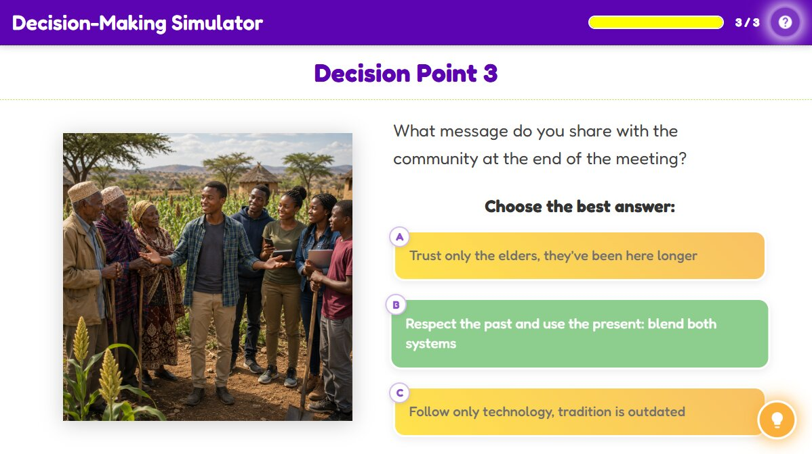

The Drought Problem
Decision-Making Simulator
Choose the best answer:
Activity Conclusion

Activity Introduction
Your village has gone 4 months without rain. The crops are dying, and the elders are concerned. You are asked to help decide what to do. Will you rely on traditional forecasts, use your smartphone weather app, or try something new? Your choices will shape what happens next.
Learner Instructions
- Read the scenario carefully, you are part of a drought-affected village making important decisions.
- At each decision point, choose the option you think will work best for the community.
- Remember to consider both Indigenous Knowledge and modern knowledge systems when making choices.
- After each choice, read the feedback to understand the impact of your decision.
- Continue until you have completed all the decision points and see the final outcome of your actions.